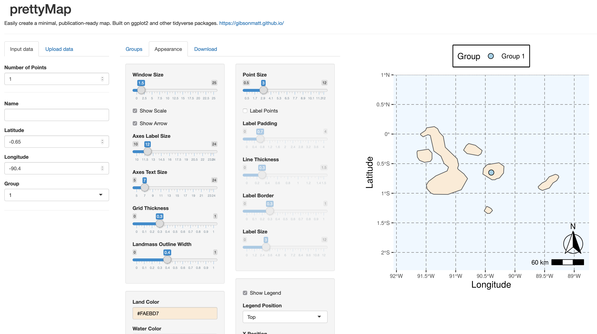

Matthew Gibson
Links
Interactive map of Galapagos field sites
Tomato Genetics Resource Center
Galapagos Mockingbird eating S. cheesmaniae fruits
Software
HeIST: Hemiplasy Inference Simulation Tool
Utilities
stacks-pairwise: Calculate pairwise divergence between samples from Stacks RAD genotyping output
Shiny Apps
mvnselection: Simulate allele frequency divergence using a multivariate normal

prettymap: Make publication-ready maps using ggplot
Data
Data from Clausen, Keck, & Hiesey (1948) in tidy format